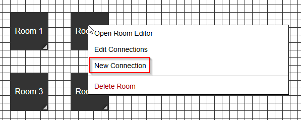
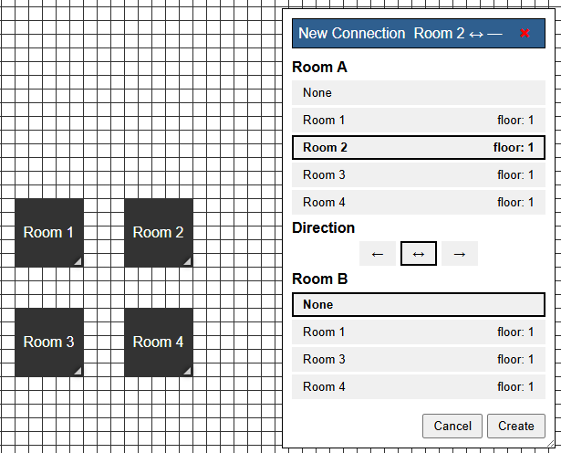

Welcome to Roombound!
So, what is Roombound?
Basically, it's a place to keep track of rooms and locations and how they connect to each other. I originally had tabletop RPG exploration in mind, but there's no particular reason your map has to be a dungeon. Buildings, cities, ships, complexes, wilderness areas... if you can describe it as a collection of connected places, Roombound can probably keep track of it.
The important thing to understand is that this isn't a battlemap. Move rooms around wherever they make the most sense, connect them however you need to, and use the notes to remember the things that aren't obvious from the map itself.
The goal is pretty simple: when you look at your map six hours later, you should still be able to figure out what you've seen, what connects to what, and where that suspicious unexplored doorway was.
This page is currently under construction. Documentation for Roombound's features will be added here as they become available.
Getting Started
This section will explain the basics of creating and working with a Roombound map.
Creating a Map
There isn't much to set up before you start. Just click Return to Roombound at the top of this page to go back to the map editor.
Working with Rooms
Once you're there, you can start adding rooms immediately. Double-click anywhere on the map to create a room at that location. You can also right-click anywhere on the map and select the option to create a new room.
Once you have a few rooms on the map, you'll probably want to connect them.
Connecting Rooms (Connections)
To create a connection, right-click a room and select Create Connection. Roombound will ask you to select the other room that you want to connect it to.

When creating a connection, a small window will appear. Notice that in the Room A section, the room you right-clicked is already selected.
If you know the name of the room you want to connect to, just select it in the Room B section and click Create.

Once both rooms have been selected, Roombound will create the connection between them.
That's really all you need to get a basic map up and running. The rest of this help page covers what you can do once you've got the basics down.
Rooms
More information about rooms will be available here.
Groups
More information about groups will be available here.
Connections
More information about connections will be available here.
Saving & Loading Maps
More information about saving and loading maps will be available here.
Sharing Maps
More information about sharing maps will be available here.